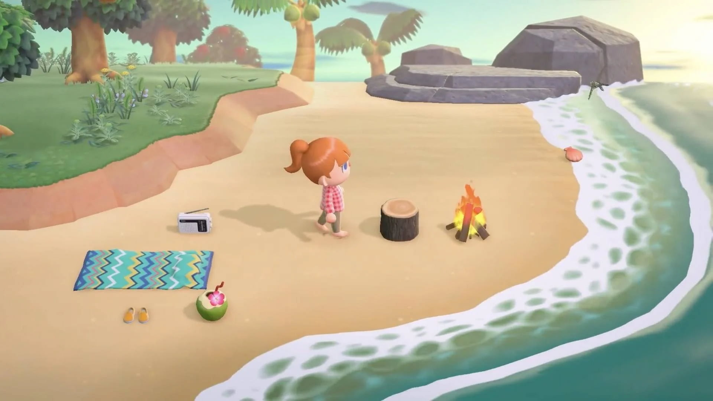
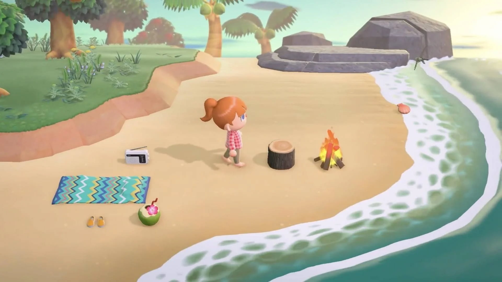

• Animal Crossing: New Horizons


| Plataforma | Idioma | Lanzamiento | Género | Desarrollador | PEGI |
| Nintendo Switch | Español | 20/03/2020 | Aventura, Simulación | Nintendo |

|
• Sinopsis del juego
Animal Crossing: New Horizons es la nueva secuela de la saga Animal Crossing para Nintendo Switch. Desarrollada por Nintendo, se trata de un capítulo más en la serie de gestión, recolección, decoración y simulación de vida de la empresa japonesa, que se ha ganado por derecho propio ser una de las más reputadas tras las exitosas entregas de Nintendo DS y Nintendo 3DS. En esta ocasión, viajaremos a una isla desierta y construiremos nuestro pueblo desde cero, mientras entablamos amistado con otros vecinos.